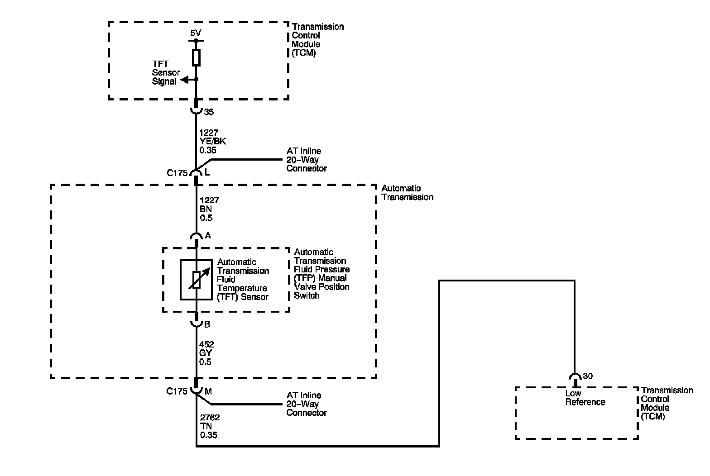

4L60-E / 4L65-E / 4L70-E Automatic Transmission
DTC P0713

Circuit Description
The automatic transmission fluid temperature (TFT) sensor is part of the automatic transmission fluid pressure (TFP) manual valve position switch. The TFT sensor is a thermistor, or a resistor that changes value when the temperature changes. The sensor has a negative-temperature coefficient. This means that as the temperature increases, the resistance decreases, and as the temperature decreases, the resistance increases. The transmission control module (TCM) supplies a 5-volt reference signal to the sensor and measures the voltage drop in the circuit. When the transmission fluid is cold, the sensor resistance is high and the TCM detects high signal voltage. As the fluid temperature increases, the resistance of the sensor decreases, which lowers the signal voltage.
If the TCM detects an open or short to voltage in the TFT sensor or signal circuit, then DTC P0713 sets. DTC P0713 is a type C DTC.
DTC Descriptor
This diagnostic procedure supports the following DTC:
DTC P0713 Transmission Fluid Temperature (TFT) Sensor Circuit High Voltage
Conditions for Running the DTC
^ No ISS DTCs P0716 or P0717.
^ No OSS DTCs P0722, P0723.
^ The output shaft speed is 200 RPM or greater for 200 or more seconds (3 minutes and 20 seconds) cumulative.
^ The TCC slip speed is 120 RPM or greater for 200 or more seconds (3 minutes and 20 seconds) cumulative.
^ The engine run time is greater than 5 seconds.
Conditions for Setting the DTC
The TCM detects a transmission fluid temperature of -39° C (-38° F) or less for 80 seconds.
Action Taken When the DTC Sets
^ The TCM does not request the ECM to illuminate the malfunction indicator lamp (MIL).
^ The TCM freezes transmission adaptive functions.
^ The TCM calculates a default transmission fluid temperature based on engine coolant temperature, intake air temperature and engine run time.
^ The TCM records the operating conditions when the Conditions for Setting the DTC are met. The TCM stores this information as a Failure Record.
^ The TCM stores DTC P0713 in TCM history.
Conditions for Clearing the DTC
^ A scan tool can clear the DTC.
^ The TCM clears the DTC from TCM history if the vehicle completes 40 warm-up cycles without a non-emission-related diagnostic fault occurring.
^ The TCM cancels the DTC default actions when the fault no longer exists and the DTC passes.
Test Description
The numbers below refer to the step numbers on the diagnostic table.
5. This step tests the TFT sensor signal circuit for being shorted to another circuit within the transmission. If the TFT sensor signal circuit shorts to another circuit that is greater than 5 volts, the TFT sensor would become open.
6. This step tests the TFT sensor signal circuit for being shorted to voltage, which would be the cause for the open in the TFT sensor.